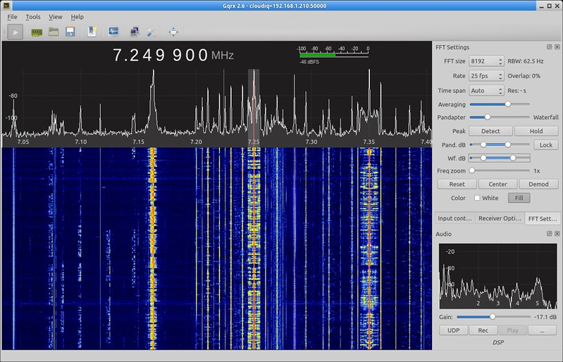

Про умный дом, разношёрстность и закидывание деньгами

Я уже много тут писал про минимализм и попытки обойтись малым. Иногда стремление к этому выходит за рамки рационального. Скажем, мне намного дешевле с учётом стоимости моего времени купить какую-нибудь железку, чем пытаться сделать её самому, но иногда просто хочется сделать что-то именно своими руками, разобраться. К сожалению, в области радиоэлектроники и микроконтроллеров я дилетант и никак не могу найти времени чтобы в этом достичь хоть какого-то прогресса, но кое-что можно сделать и на этом уровне. Ещё меня постоянно кидает из стороны в сторону и я постоянно переключаюсь с умного дома на 3д печать, с 3д печати на моделирование, с моделирования на что-то ещё. Благо, что зачастую эти сферы соприкасаются друг с другом и навыки, полученные в одной оказываются полезными в иной там, где этого не ожидаешь.
Одним из увлечений было SDR - Software Defined Radio. Суть в том, что при помощи специальных устройств можно принимать не только передачу какой-то определённой частоты, но и визуально отображать наличие активности (передачи) в широком спектре частот. Выглядит это примерно так:

Далее достаточно выбрать нужную частоту и железо само настроится на её приём. Таким образом можно поймать вещание привычных всем радиостанций, радиопередачи различных служб, телеметрию со спутников и самолётов и много всего прочего. Конечно, подобные железки бывают разного качества, разной степени сложности и, соответственно, цены - от пары десятков долларов до плюс бесконечности. Так вот, прикупил я когда-то в числе прочего один такой небольшой USB приёмник, чтобы иметь возможность подключить его как к смартфону, так и к стационарному компьютеру. Подобные приёмники распространяются обычно для просмотра телевещания на смартфонах, но сфера их применения в умелых руках может быть намного шире. Купил, поразвлекался и забыл где-то на дальней полке.

И вот, спустя года 4 наткнулся на интересный проект. Суть его заключается в том, что с помощью подобных описанному выше устройств мы перехватываем на частоте 433 мегагерца (или другой, частоту можно указать в качестве параметра при вызове) коды множества радиопультов и в зависимости от их формата декодировать их, выдавая на выходе валидный json, который мы уже можем использовать в собственных целях. Пульты бывают разными - в виде настенных панелей с кнопками, т.е. в формфакторе настенного выключателя, в виде брелоков наподобие тех, которыми снабжаются автомобильные сигнализации, в виде кнопок и т.п..
Спустя час времени, потраченного на потрошение шкафов, девайс был найден. В соответствии с документацией по сборке собраны бинарные файлы и откопан беспроводной трёхкнопочный выключатель, заказанный заранее для экспериментов с библиотекой RCSwitch, не увенчавшихся успехом. Выглядит выключатель вот так:

Существуют версии с одной, двумя и тремя клавишами. Также есть с четырьмя, но в другом дизайне и дороже раза в два. К слову, этот выключатель обошёлся мне всего в 230 с небольшим рублей на Али. После быстрого изучения хэлпа и запуска sudo rtl_433 -F json, при нажатии и отпускании кнопок получаем в консоли следующее (для первой, второй и третьей кнопки соответственно):
rtl_433 version 20.02-68-g7b2f90f branch master at 202006182343 inputs file rtl_tcp RTL-SDR
Use -h for usage help and see https://triq.org/ for documentation.
Trying conf file at "rtl_433.conf"...
Trying conf file at "/root/.config/rtl_433/rtl_433.conf"...
Trying conf file at "/usr/local/etc/rtl_433/rtl_433.conf"...
Trying conf file at "/etc/rtl_433/rtl_433.conf"...
Registered 125 out of 153 device decoding protocols [ 1-4 8 11-12 15-17 19-21 23 25-26 29-36 38-60 63 67-71 73-100 102-105 108-116 119 121 124-128 130-149 151-153 ]
Detached kernel driver
Found Rafael Micro R820T tuner
Exact sample rate is: 250000.000414 Hz
[R82XX] PLL not locked!
Sample rate set to 250000 S/s.
Tuner gain set to Auto.
Tuned to 433.920MHz.
Allocating 15 zero-copy buffers
{"time" : "2020-06-30 18:20:42", "model" : "Akhan-100F14", "id" : 30250, "data" : "0x2 (Unlock)"}
{"time" : "2020-06-30 18:20:42", "model" : "Akhan-100F14", "id" : 30250, "data" : "0x2 (Unlock)"}
{"time" : "2020-06-30 18:20:42", "model" : "Akhan-100F14", "id" : 30250, "data" : "0x2 (Unlock)"}
{"time" : "2020-06-30 18:20:42", "model" : "Akhan-100F14", "id" : 30250, "data" : "0x2 (Unlock)"}
{"time" : "2020-06-30 18:20:42", "model" : "Akhan-100F14", "id" : 30250, "data" : "0x2 (Unlock)"}
{"time" : "2020-06-30 18:20:42", "model" : "Akhan-100F14", "id" : 30250, "data" : "0x2 (Unlock)"}
{"time" : "2020-06-30 18:20:42", "model" : "Akhan-100F14", "id" : 30250, "data" : "0x2 (Unlock)"}
{"time" : "2020-06-30 18:20:42", "model" : "Akhan-100F14", "id" : 30250, "data" : "0x2 (Unlock)"}
{"time" : "2020-06-30 18:20:42", "model" : "Smoke-GS558", "id" : 10807, "unit" : 0, "learn" : 0, "code" : "4546e0"}
{"time" : "2020-06-30 18:20:43", "model" : "Akhan-100F14", "id" : 30250, "data" : "0x4 (Mute)"}
{"time" : "2020-06-30 18:20:43", "model" : "Akhan-100F14", "id" : 30250, "data" : "0x4 (Mute)"}
{"time" : "2020-06-30 18:20:43", "model" : "Akhan-100F14", "id" : 30250, "data" : "0x4 (Mute)"}
{"time" : "2020-06-30 18:20:43", "model" : "Akhan-100F14", "id" : 30250, "data" : "0x4 (Mute)"}
{"time" : "2020-06-30 18:20:43", "model" : "Akhan-100F14", "id" : 30250, "data" : "0x4 (Mute)"}
{"time" : "2020-06-30 18:20:43", "model" : "Akhan-100F14", "id" : 30250, "data" : "0x4 (Mute)"}
{"time" : "2020-06-30 18:20:43", "model" : "Smoke-GS558", "id" : 10807, "unit" : 0, "learn" : 0, "code" : "2546e0"}
{"time" : "2020-06-30 18:20:45", "model" : "Akhan-100F14", "id" : 30250, "data" : "0x8 (Alarm)"}
{"time" : "2020-06-30 18:20:45", "model" : "Akhan-100F14", "id" : 30250, "data" : "0x8 (Alarm)"}
{"time" : "2020-06-30 18:20:45", "model" : "Akhan-100F14", "id" : 30250, "data" : "0x8 (Alarm)"}
{"time" : "2020-06-30 18:20:45", "model" : "Akhan-100F14", "id" : 30250, "data" : "0x8 (Alarm)"}
{"time" : "2020-06-30 18:20:45", "model" : "Akhan-100F14", "id" : 30250, "data" : "0x8 (Alarm)"}
{"time" : "2020-06-30 18:20:45", "model" : "Akhan-100F14", "id" : 30250, "data" : "0x8 (Alarm)"}
{"time" : "2020-06-30 18:20:45", "model" : "Akhan-100F14", "id" : 30250, "data" : "0x8 (Alarm)"}
{"time" : "2020-06-30 18:20:45", "model" : "Akhan-100F14", "id" : 30250, "data" : "0x8 (Alarm)"}
{"time" : "2020-06-30 18:20:45", "model" : "Akhan-100F14", "id" : 30250, "data" : "0x8 (Alarm)"}
{"time" : "2020-06-30 18:20:45", "model" : "Smoke-GS558", "id" : 10807, "unit" : 0, "learn" : 0, "code" : "1546e0"}
Пока кнопка удерживается, примерно около 20-ти раз в секунду отправляются коды формата Akhan-100F14, затем при отпускании - коды формата Smoke-GS558. Как их интерпретирует библиотека - нам в принципе, не важно. Главное, что результат является повторяемым. И что отлично - повторяемым на площади всей моей двухкомнатной квартиры. Идея следующая - можно направить stdout приложения на вход цикла while в шелле при отпускании в зависимости от количества сигналов типа Smoke-GS558, отправлять в mqtt для каждой из кнопок время удержания - shot/medium/long.
Сказано - сделано. Вечером набросал простой скриптик со следующим содержимым:
#!/bin/sh
buttons='
1 0x2 4546e0 0
2 0x4 2546e0 0
3 0x8 1546e0 0
'
! [ -f mqtt.conf ] && echo "Fail to find mqtt.conf file" && exit 1
. ./mqtt.conf
mqtt="mosquitto_pub -h $host -p $port"
[ -n "$user$pass" ] && mqtt="$mqtt -u $user -P $pass"
[ -n "$topicpref" ] && mqtt="$mqtt -t $topicpref" || mqtt="$mqtt -t /rtl433"
cd `dirname "$0"`
! [ -f mqtt.conf ] && echo "Fail to find mqtt.conf file" && exit 1
. ./mqtt.conf
rtl_433 -F json -M utc |
while IFS= read -r line; do
code=`echo "$line" | sed '/"data"/!d;s/^.* "data" : "//;s/ .*$//'`
if [ -n "$code" ]; then
button=`echo "$buttons" | awk '$2~/'"$code"'/ {print $1}'`
if [ -n "$button" ]; then
buttons=`echo "$buttons" | awk '{ if ($1~/^'$button'$/) {print $1" "$2" "$3" "$4+1} else {print $0}}'`
else
echo "Found unknown code: $code"
fi
else
code=`echo "$line" | sed 's/^.* "code" : "//;s/".*//'`
if [ -n "$code" ]; then
button=`echo "$buttons" | awk '$3~/'"$code"'/ {print $1}'`
count=`echo "$buttons" | awk '$3~/'"$code"'/ {print $4}'`
if [ -n "$button" ]; then
buttons=`echo "$buttons" | awk '{ if ($1~/^'$button'$/) {print $1" "$2" "$3" "0} else {print $0}}'`
if [ "$count" -lt 6 ]; then
l='short'
elif [ "$count" -lt 17 ]; then
l='middle'
else
l='long'
fi
echo "$(date '+%F %T') Button $button is up after $l press ($count)"
$mqtt/button_$button/$l -m '1'
else
echo "Found unknown code: $code"
fi
fi
fi
done
В массиве buttons для каждой из кнопок хранится поле data для формата Akhan-100F14, поле code для формата Smoke-GS558 и количество текущих повторений. Данные учётной записи для подключения к mqtt серверу подтягиваются из файла mqtt.conf:
host=hostname
port=1883
user=username
pass=password
topicpref=
Теперь при нажатии кнопок в соответствующие mqtt топики /rtl433/button_1/short, /rtl433/button_3/long и т.п. попадает единица. Таким образом мы имеем 9 триггеров, к которым можем привязывать произвольные действия на стороне системы умного дома. Например, в Home Assistant, на который я не так давно переехал с Majordomo, пример привязки короткого нажатия на первую кнопку выглядит так:
- alias: 'RFButton1Short'
trigger:
platform: mqtt
topic: /rtl433/button_1/short
payload: "1"
# encoding: "utf-8"
action:
- service: light.toggle
entity_id: light.torsher
Просто, дёшево, сердито. Приклеил панель за боковину шкафа купе, внутри которого у меня стоят 3д принтеры и нажатие первой кнопки включает торшер, а её удержание - запускает скрипт на octoprint, который в свою очередь включает питание принтера, ждёт, когда тот станет доступен, подключается и запускает преднагрев стола и сопла для печати PETG пластиком. Очень удобно, даже шкаф теперь не нужно открывать. Но самое главное - у меня теперь появился механизм, который позволяет дёшево и просто интегрировать новые выключатели в систему умного дома. И, если подумать, то не только выключатели. Можно сделать дешёвые бинарные датчики (скажем, открытия или протечки), работающие от батареек годами. Если я повешу на каждое окно и дверь в моей двухкомнатной квартире датчик открытия двери, которые считаются дешёвыми, то получится круглая сумма. Окна на балконе - 2 створки, окна в комнате и на кухне - ещё по 2 створки, окно из комнаты на балкон и дверь - ещё 2 датчика, двери в большую и маленькую комнаты, на кухню, в туалет и ванную - в общей сложности нужно 13 датчиков. В среднем датчик открытия двери/окна у Xiaomi стоит от 650 рублей. Перемножаем, получаем 8450 рублей. Посмотрим, насколько мне получится уменьшить эту сумму, если я попробую сделать датчики сам. Расскажу как-нибудь в одной из следующих статей. Если повезёт и у меня получится утрамбовать код, обеспечивающий глубокий сон, прерывания и отправку сигнала в килобайт вместе с загрузчиком, то в качестве микроконтроллера я планирую использовать AtTiny13 (10 штук стоит 200 рублей и они у меня уже есть), если не получится - AtTiny44.
Теги: smarthome, automatization, lifehack, minimalism